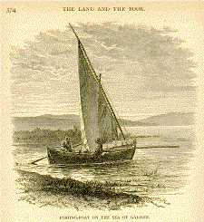

The Land and the Book
or Biblical Illustrations drawn from the Manners and Customs, the Scenes and
Scenery of the Holy Land
By William M. Thomson (New York: Harper & Brothers, 1858)
|  |
[from the Introduction] The land where the Word-Made-Flesh dwelt amongst men must ever continue to be an important part of Revelation; and Palestine may be fairly regarded as the divinely prepared tablet whereon God's messages to men have been graven in ever-living characters. This fact invests even the geography and topography of the Holy Land with special importance. But there are other considerations which impart to it a deeper and more practical interest. From this land we have received that marvellous spriritual and figurative nomenclature of the Bible through which nearly all true religious knowledge has been communicated to men. Here it was devised and first used, and here are found its best illustrations. We learn from history that it required fifteen centuries of time, and an endless array of providential arrangements, co-operating with human and superhuman agents and agencies, to bring this medium of intercourse between God and man to the needed perfection. |
|
Let us, therefore, deal reverently with [the Holy Land], walk softly over those acres once trodden by patriarchs, prophets, and poets, and even by the sacred feet of the Son of God himself. Let us put off the sordid sandal of worldliness and sin as we enter this consecrated domain. There is design in this peculiar grouping of mountains and plains, hills and valleys, lakes and rivers, the desert and the sea, all in intimate association with the marvellous and miraculous incidents and phenomena recorded in the Bible. The Land and the Book constitute the all-perfect text of the Word of God, and can be best studied together. To read the one by the light of the other has been the privilege of the author for more than forty years, and the governing purpose in publishing is to furnish additional facilities for this delightful study to those who have not been thus exceptionally favored. [pp. 1 & 3] |
|